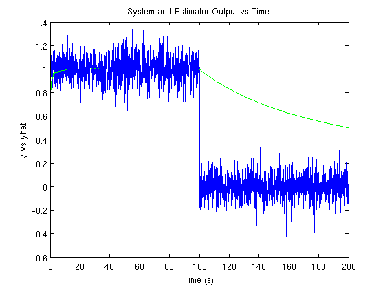
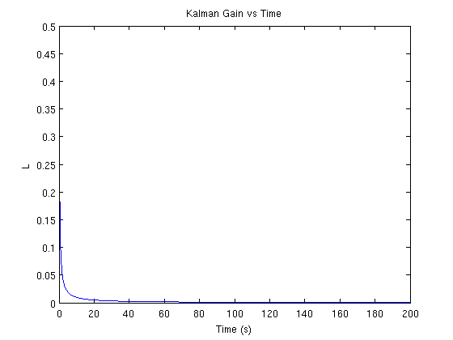
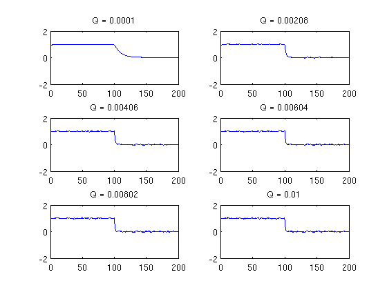
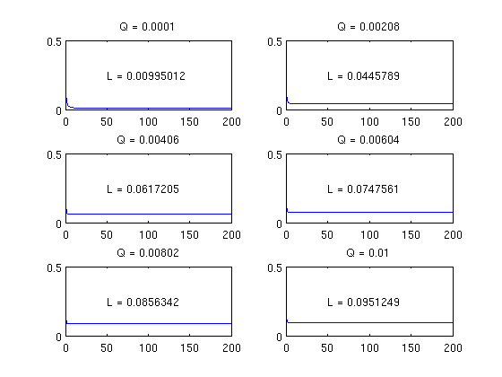
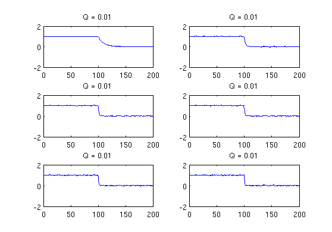

Contents
Homework 4 - Problem 2
Download the data hw4_2 from the website. The data is in the form [t y]. Supose we want to design an estimator to estimate the bias in the measurement y. We believe that the bias (x) is constant.
clear; clc; close all; load hw4_2.txt; t = hw4_2(:,1); y = hw4_2(:,2); %plot(t,y); sigma_v = 1;
Part A
Run the Kalman filter estimator with Q_d = 0. What happens at t> 100 seconds. Why? Calculate the steady state Kalman gain L_ss. Plot L(k). This is known as the filter "going to sleep."
Answer
When the system is simulated, the estimated value remains at 1, even though there is a step function in the system. It then slowly decays to match the system, but the time constant on the filter is too large. The filter ignores all of the measurements after it has reached it's steady state.
The hand calculations reveal that the filter's Pminus should approach zero, Pplus should approach zero, so Lss should approach zero as well. The plot of Lk vs time indicates that this is the behavior that I saw.
R = sigma_v^2; A = 1; C = 1; Q = 0; %Preallocations P_plus = zeros(size(t)); x_hat_minus = zeros(size(t)); L = zeros(size(t)); P_minus = ones(size(t)); x_hat_plus = zeros(size(t)); E = zeros(size(t)); for ii = 1:length(hw4_2), % Compute Kalman Gain P_plus(ii) = P_minus(ii) * (P_minus(ii) + R)^-1; L(ii) = P_plus(ii)/inv(R); % Update estimator with y(k) E(ii) = y(ii) - x_hat_minus(ii); x_hat_plus(ii) = x_hat_minus(ii) + L(ii) * E(ii); % Update covariance P_plus(ii) = (1 - L(ii)) * P_minus(ii); % Propagate Forward x_hat_minus(ii+1) = A * x_hat_plus(ii); P_minus(ii+1) = A * P_plus(ii) * A' + Q; end figure(1); plot(t,y,t,x_hat_plus,'g'); title('System and Estimator Output vs Time'); xlabel('Time (s)'); ylabel('y vs yhat'); figure(2);plot(t,L); title('Kalman Gain vs Time'); xlabel('Time (s)'); ylabel('L'); 
Part B
"Tune" Qd to track the bias.
Answer
As the values of Q are varied from 0.0001 to 0.01, the estimated value x_hat tracks much closer to the measurements. The filter is no longer "going to sleep" like it did in the first problem.
This is not without side effect. As Q increases, it is likely that the estimator is starting to track measurement noise as well as disturbance noise, which produces a less valuable output. Also, the filter never approaches the 0 steady state as it did in the first part. Instead, it converges on a higher value.
R = sigma_v^2; A = 1; C = 1; Q_array = linspace(0.0001,0.01,6); figure(3); figure(4); for jj = 1:length(Q_array) Q = Q_array(jj); %Preallocations P_plus = zeros(size(t)); x_hat_minus = zeros(size(t)); L = zeros(size(t)); P_minus = ones(size(t)); x_hat_plus = zeros(size(t)); E = zeros(size(t)); for ii = 1:length(hw4_2), % Compute Kalman Gain P_plus(ii) = P_minus(ii) * (P_minus(ii) + R)^-1; L(ii) = P_plus(ii)/inv(R); % Update estimator with y(k) E(ii) = y(ii) - x_hat_minus(ii); x_hat_plus(ii) = x_hat_minus(ii) + L(ii) * E(ii); % Update covariance P_plus(ii) = (1 - L(ii)) * P_minus(ii); % Propagate Forward x_hat_minus(ii+1) = A * x_hat_plus(ii); P_minus(ii+1) = A * P_plus(ii) * A' + Q; end figure(3); subplot(3,2,jj); plot(t,x_hat_plus); title(sprintf('Q = %g',Q)); figure(4); subplot(3,2,jj); plot(t,L); title(sprintf('Q = %g',Q)); text(50,.25,sprintf('L = %g',L(ii))); end 
Part C
Now filter the measurement using the first order LPF.
color = ['g','r','b', 'y']; figure(5); for ii = 1:length(Q_array), numd = sqrt(Q_array(ii)); dend = [1,-(1-sqrt(Q_array(ii)))]; yf = filter(numd,dend,y,y(1)); subplot(3,2,ii); plot(t,yf); title(sprintf('Q = %g',Q)); end
Part D
How does this compare to the Kalman filter solution? Why are these two filters the same for this problem?
Answer
The low pass filter and the Kalman filter have nearly identical responses in this problem.
The reason for the similarity is because the Kalman filter is in essence an adaptive bandwidth low-pass filter. The reason that the first order LPF works just as well as the Kalman filter is that there are no system dynamics to take into account (xdot = 0), and we are just estimating what is essentially a constant (plus some disturbance and noise). In this case, the Kalman filter reduces to the low-pass filter, in a way.